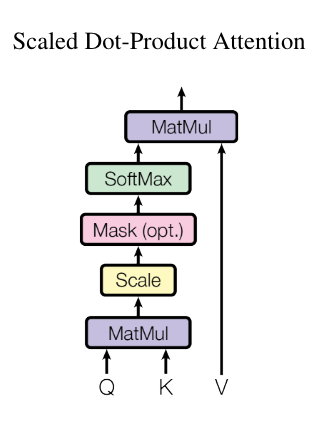
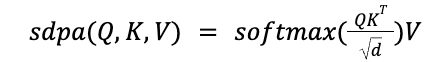

Simple implementation of self-attention using PyTorch.
NLP
transfomers
PyTorch
Published
April 1, 2024
How Attention Mechanism works in Transformers
The attention mechanism is an operator that was introduced as part of the Transformer architecture by the paper entitled “Attention is All You Need”.
As highligthed by Attention Mechanisms and Transformers, the intuition behind attention is that rather than compressing the input, it might be better for the decoder to revisit the input sequence at every step.
Moreover, rather than always seeing the same representation of the input, one might imagine that the decoder should selectively focus on particular parts of the input sequence at particular decoding steps.
The high-level idea is that the encoder could produce a representation of length equal to the original input sequence. Then, at decoding time, the decoder can (via some control mechanism) receive as input a context vector consisting of a weighted sum of the representations on the input at each time step. Intuitively, the weights determine the extent to which each step’s context “focuses” on each input token, and the key is to make this process for assigning the weights differentiable so that it can be learned along with all of the other neural network parameters.
Attention Mechanism as a Scaled Dot Product Attention

image-attention
The main components of the attention mechanism by Transfomers are: - q: query vector - k: key vector - v: values vector
Self-attention using PyTorch
# Mathematical trick of self-attentionimport torchimport torch.nn as nnfrom torch.nn import functional as F# toy example illustrating how matrix multiplication can be used for a "weighted aggregation"torch.manual_seed(42)a = torch.tril(torch.ones(3, 3))a = a / torch.sum(a, 1, keepdim=True)b = torch.randint(0,10,(3,2)).float()c = a @ bprint('a=')print(a)print('--')print('b=')print(b)print('--')print('c=')print(c)
# consider the following toy example:torch.manual_seed(1337)B,T,C =4,8,2# batch, time, channels -> 8 tokens in a batch with 2 dimension each.x = torch.randn(B,T,C)x.shape
torch.Size([4, 8, 2])
In this example we assume auto regressive model (decoder only transformers). That means each token t only consider the previous tokens t-1, t-2, etc. Example: Token in the 5th location should only talk to tolken in the 4th, 3rd, 2nd and 1st location.
The code below is using bag-of-words (bow) to implement the auto regressive - considering average of previous tokens using torch.mean.
# We want x[b,t] = mean_{i<=t} x[b,i]xbow = torch.zeros((B,T,C))for b inrange(B):for t inrange(T): xprev = x[b,:t+1] # (t,C) xbow[b,t] = torch.mean(xprev, 0)x[0]
# Now xbow represents the tokens averaged by previous tokens.xbow[0] # Example: token -0.0894, -0.4926 is an average of [[ 0.1808, -0.0700],[-0.3596, -0.9152]]
Using matrix multiplation is a more efficient method compared to the for-loops.
# Let´s take the example of A (3x3) x B(3x2) = C(3x2)torch.manual_seed(42)a = torch.ones(3,3)b = torch.randint(0,10,(3,2)).float()c = a @ b # Matrix multiplication in pytorchprint('a=')print(a)print('b=')print(b)print('c=')print(c)print('c-shape=')print(c.shape)
# Using torch.tril -> lower tringular part of a matrix (i.e. my diagonal matrix in calculus :-) )torch.manual_seed(42)a = torch.tril(torch.ones(3,3))a = a / torch.sum(a, 1, keepdim=True) # weighted aggregationb = torch.randint(0,10,(3,2)).float()c = a @ b # Matrix multiplication in pytorchprint('a=')print(a)print('b=')print(b)print('c=')print(c)print('c-shape=')print(c.shape)
For lower triangle matix (a.k.a diagnoal matrix) we use torch.marked_fill to change 0 values to -inf. Using softmax (i.e. normalization), allows us to obtain the same wei (weight) matrix as before, BUT it allows to wei to represent the affinities between tokens.
# version 3: use Softmaxtril = torch.tril(torch.ones(T, T))wei = torch.zeros((T,T))wei = wei.masked_fill(tril ==0, float('-inf')) # future can not communicate with past. :-) wei = F.softmax(wei, dim=-1)xbow3 = wei @ xtorch.allclose(xbow, xbow3)
True
Single-Head Self-attention to the rescue
C (channel) is the number of embedding dimension (C = 32). In current LLMs this is in the order of >1500 dimensions.
In the example below we see a single head self attention.
Simple and nice explanation of Q, K and V by Andrej:
Every single token has 2 vectors: query and key.
Query (Q) vector represents “what I am lookig for”.
Key (K) vector represents “What do I contain”.
Thus afinity between tokens is the .dot product between query and key and becomes wei (weights).
Here head_size is a hyperparameter.
Scaled Dot Product Attention (SDPA) is a component of the multi head attention and it is defines as 
where Q,K,V stand for queries, keys and values, and d is the dimension (head_size hyperparameter below) of the queries/keys.
Below is the SDPA implementation by Andrej Karpathy.
# version 4: self-attention!torch.manual_seed(1337)B,T,C =4,8,32# batch, time, channelsx = torch.randn(B,T,C)# let's see a single Head perform self-attentionhead_size =16key = nn.Linear(C, head_size, bias=False)query = nn.Linear(C, head_size, bias=False) # applies matrix multiply.value = nn.Linear(C, head_size, bias=False) # applies matrix multiply.k = key(x) # (B, T, 16)q = query(x) # (B, T, 16)wei = q @ k.transpose(-2, -1) # (B, T, 16) @ (B, 16, T) ---> (B, T, T) transpose only last two dimensions.# Now wei (weights) contains the relationship between tokens.tril = torch.tril(torch.ones(T, T))#wei = torch.zeros((T,T))wei = wei.masked_fill(tril ==0, float('-inf'))wei = F.softmax(wei, dim=-1) # exponentiate and normalizev = value(x) # v aggregate info for the single head.out = wei @ v#out = wei @ xout.shape
# Now looking at the weight we see for example [0.0210, 0.0843, 0.0555, 0.2297, 0.0573, 0.0709, 0.2423, 0.2391]] representing the 8th token.# You see 8th token with high affinity to the 4th token.#Thus .dot product between query and key gives the affinitywei[0]
According to authors of the transformer paper, multi-head attention allows the model to jointly attend to information from different representation subspaces at different positions. With a single attention head, averaging inhibits this.
Thus multi-head attention linearly projects the queries, keys and values h (number of heads) times with different, learned linear projections to q, k and v dimensions, respectively.
sdpa
The mathematical representation of multi-head attention is
Attention is a communication mechanism. Can be seen as nodes in a directed graph looking at each other and aggregating information with a weighted sum from all nodes that point to them, with data-dependent weights.
There is no notion of space. Attention simply acts over a set of vectors. This is why we need to positionally encode tokens.
Each example across batch dimension is of course processed completely independently and never “talk” to each other
“self-attention” just means that the keys and values are produced from the same source as queries. In “cross-attention”, the queries still get produced from x, but the keys and values come from some other, external source (e.g. an encoder module)
“Scaled” attention additional divides wei by 1/sqrt(head_size). This makes it so when input Q,K are unit variance, wei will be unit variance too and Softmax will stay diffuse and not saturate too much.